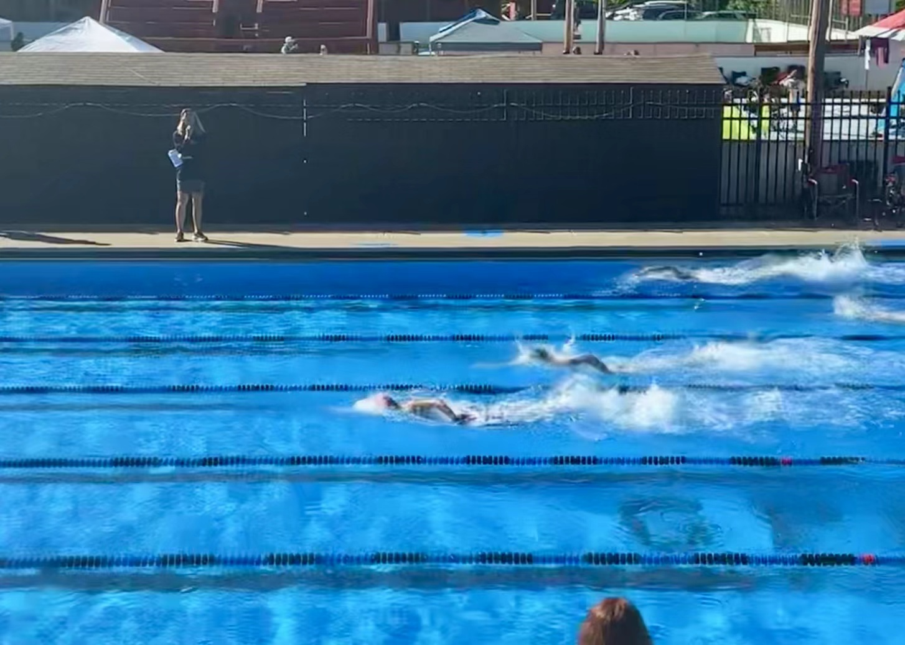
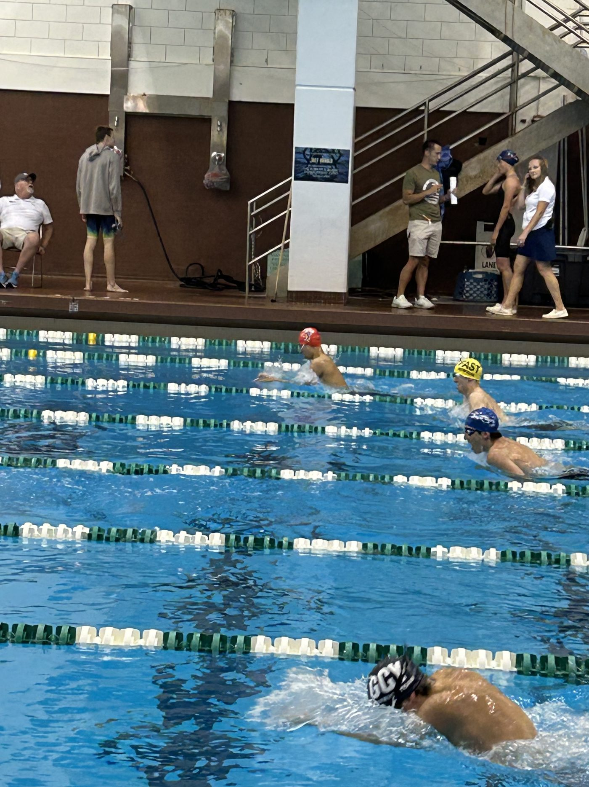
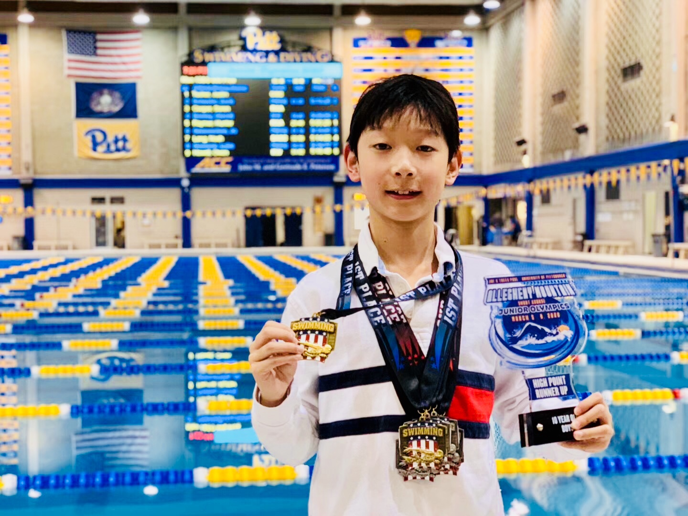
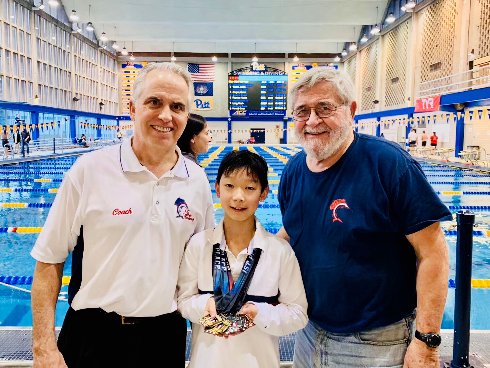
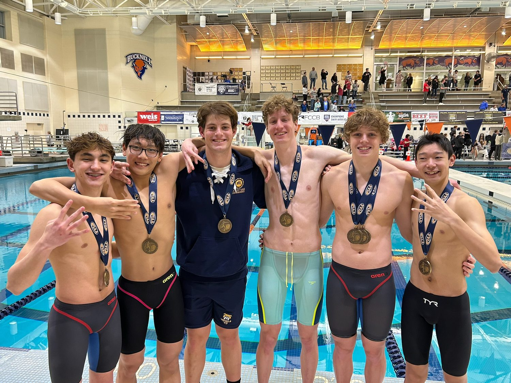

Quiet mornings, loud afternoons
I’ve been in the water since I was five, right around when I first sat down at a piano, so the two have been running side by side my whole life. It’s the one habit I’ve never really broken - there’s almost always been a black line to follow before school.

Most of my swimming is club swimming: year-round USA Swimming, early practices, and long sets that nobody’s watching. It’s mostly you against the clock, and the clock doesn’t care how you feel that morning. That’s where the base gets built. Twice it took me to the Eastern Zone Long Course Age Group Championships, which was the first time the miles really felt like they added up to something.

High school swimming is a different animal. Suddenly it’s a team, it’s scored, and there’s a whole deck of people yelling for a race that’s over in under a minute. Swimming for Shady Side, we took back-to-back WPIAL section titles, and I’ve made it to the WPIAL championships three years running and the PIAA state meet twice.

The relays are the part I’d never trade. Four people, one combined time, and a very direct kind of accountability - nobody wants to be the leg that let the other three down. It’s the closest swimming gets to a real team sport, and after a season of solitary mornings, it feels like the reward.

Club and varsity pull in opposite directions - one quiet and internal, the other loud and collective - and I’ve needed both. The grind is what makes the racing possible, and the racing is what makes the grind worth it. A hard morning set also has a way of making the rest of the day feel easy.

People ask if it ever gets boring, staring at the bottom of a pool for two hours. It doesn’t, really - same as with piano, every day in the water is a slightly different version of me showing up, and I’ve come to like who that turns me into.
